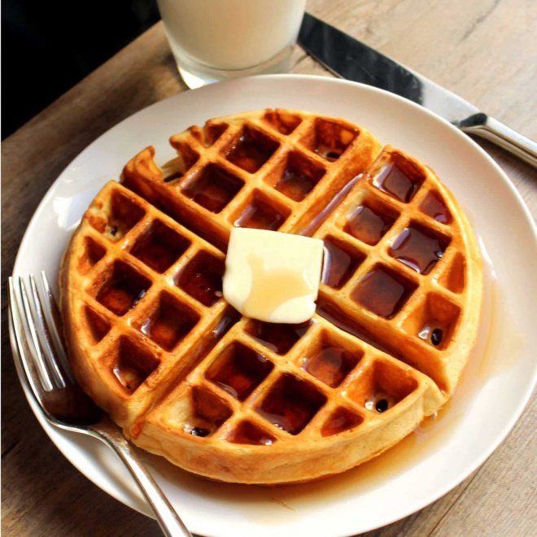

Waffle Clássico

receita de waffle clacico
Ingredientes
- 2 xicaras (chá) de farinha de trigo
- 2 colheres (sopa) de acucar
- 2 colheres (chá) de fermento em pó
- 1/2 colher (chá) de sal
- 2 colheres de amido de minho
- 3 ovos batidos
- 4 colheres (sopa) de manteiga sem sal derretida
- 1 e 3/4 de xicara (chá) de leite
- 1 colher (sopa) de essência de baunilha
Modo de preparo
- Peneire em um recepiente a farinha de trigo, o açucar, o amido, o fermento e o sal. Reserve
- Em um outro recepiente misture os ovos batidos com leite, a manteiga derretida e a essência de baunilha.
- Despeje sobre a mistura de farinha e rapidamente incorpore os ingredientes.
- Aqueça o aparelho pa Waffles. Coloque uma concha de massa e espalhe até cobrir o molde do aparelho, feche a tampa e deixe assar até a massa ficar bem dourada.
- Retire com espátulas de silicone. Sirva com mel, frutas ou geleia.